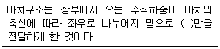
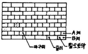
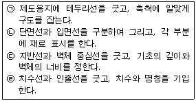
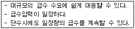

전산응용건축제도기능사 (2008-10-05 기출문제)
1과목: 건축구조
1. 다음 중 철근콘크리트구조의 특성으로 옳지 못한 것은?
- 부재의 크기와 형상을 자유롭게 제작할 수 있다.
- 내화성이 우수하다.
- 작업방법, 기후 등에 영향을 받지 않으므로 균질한 시공이 가능하다.
- 철골조에 비해 철거 작업이 곤란하다.
(정답률: 69%)

2. 트러스 구조에 대한 설명으로 옳지 않은 것은?
- 지점의 중심선과 트러스절점의 중심선은 가능한 한 일치시킨다.
- 항상 인장력을 받는 경사재의 단면이 가장 크다.
- 트러스의 부재중에는 응력을 거의 받지 않는 경우도 생긴다.
- 트러스 부재의 절점은 핀접합으로 본다.
(정답률: 56%)
3. 건물의 하부 전체 또는 지하실 전체를 하`나의 기초판으로 구성한 기초로서 매트 슬래브 기초 또는 매트 기초라고 불리우는 것은?
- 독립기초
- 줄기초
- 복합기초
- 온통기초
(정답률: 82%)
4. 블록의 빈 속에 철근과 콘크리트를 부어넣은 것으로서 수직하중?수평하중에 견딜 수 있는 구조로 가장 이상적인 블록구조는?
- 거푸집블록조
- 보강블록조
- 조적식블록조
- 블록장막벽
(정답률: 69%)
5. 창호 종류 중 방풍을 목적으로 풍소란을 설치하는 것은?
- 플러시문
- 미서기문
- 회전문
- 양판문
(정답률: 56%)
6. 다음의 각 건축구조에 대한 설명으로 옳지 않은 것은?
- 건식구조는 기성재를 짜맞추어 구성하는 구조로서 물은 거의 쓰이지 않는다.
- 일체식구조는 철근콘크리트 구조 등을 말한다.
- 조립식구조는 경제적이나 공기(工期)가 길다.
- 비내력벽구조는 상부하중을 받지 않는 구조로서 장막벽등을 말한다.
(정답률: 73%)
7. 벽돌구조에서 줄눈의 종류가 아닌 것은?
- 가로줄눈
- 세로줄눈
- 통줄눈
- 경사줄눈
(정답률: 65%)
8. 목조 계단의 폭이 1.2m이상일 때 디딤판의 처짐, 보행 진동 등을 막기 위하여 뒷면에 보강하는 부재는?
- 계단멍에
- 엄지기둥
- 난간두겁
- 계단참
(정답률: 61%)
9. 철골조의 판보에서 웨브판의 좌굴을 방지하기 위해 설치하는 보강재는?
- 스터드
- 덮개판
- 끼움판
- 스티프너
(정답률: 88%)
10. 평기와로 지붕잇기 공사를 하려면 지붕의 경사는 최소 얼마이상으로 하는가?
- 1/10
- 2/10
- 3/10
- 4/10
(정답률: 54%)
11. 다음 중 콘크리트 설계기준 강도를 의미하는 것은?
- 콘크리트 타설 후 9일 인장 강도
- 콘크리트 타설 후 7일 압축 강도
- 콘크리트 타설 후 28일 인장 강도
- 콘크리트 타설 후 28일 압축 강도
(정답률: 73%)
12. 철근콘크리트 슬래브에서 단변길이가 3m일 때 2방향슬래브가 되기 위한 장변길이는 최대 얼마 이하여야 하는가?
- 4.5m
- 5.0m
- 6.0m
- 6.5m
(정답률: 82%)
13. 바닥 면적이 40㎡ 일 때 보강콘크리트블록조의 내력벽 길이의 총합계는 최소 얼마 이상이어야 하는가?
- 4m
- 6m
- 8m
- 10m
(정답률: 55%)
14. 철골공사시 바닥슬래브 타설하기 전에, 철골보위에 설치하여 바닥판 등으로 사용하는 절곡된 얇은 판의 부재는?
- 윙플레이트
- 데크플레이트
- 베이스플레이트
- 메탈라스
(정답률: 58%)
15. 다음 ( )에 알맞은 말은?

- 인장력
- 압축력
- 휨모멘트
- 전단력
(정답률: 55%)
16. 돌구조에서 창문 등의 개구부 위에 걸쳐대어 상부에서 오는 하중을 받는 수평부재는?
- 문지방돌
- 인방돌
- 창대돌
- 쌤돌
(정답률: 78%)
17. 다음 그림과 같이 벽돌을 쌓는 방식은?

- 영국식 쌓기
- 네델란드식 쌓기
- 프랑스식 쌓기
- 미국식 쌓기
(정답률: 70%)
18. 다음 중 목재에 대한 설명으로 옳지 않은 것은?
- 강재에 비해 열전도율이 작다.
- 비강도가 크다.
- 가공이 비교적 용이하다.
- 습기에 따른 신축이 거의 없다.
(정답률: 77%)
19. 다음 중 지반의 허용지내력도가 가장 큰 것은?
- 자갈
- 모래
- 연암반
- 모래섞인 점토
(정답률: 34%)
20. 다음 중 철골구조에서 사용되는 접합방법에 속하지 않는 것은?
- 용접
- 듀벨접합
- 고력볼트접합
- 핀접합
(정답률: 71%)
2과목: 건축재료
21. 다음 중 댐공사나 방사능 차폐용 콘크리트에 가장 적당한 시멘트는?
- 조강포틀랜드시멘트
- 중용열포틀랜드시멘트
- 팽창시멘트
- 알루미나시멘트
(정답률: 58%)
22. 다음 중 실험실이나 레미콘 생산 배합과 같이 정밀한 배합을 요구할 때 사용되는 콘크리트 배합 방법은?
- 절대용적배합
- 현장용적배합
- 표준계량용적배합
- 중량배합
(정답률: 25%)
23. 회반죽바름이 공기 중에서 경화 하는데 필요한 것은?
- 탄산가스
- 수소
- 질소
- 염소
(정답률: 75%)
24. 금속 또는 목재에 적용되는 것으로서, 지름 10㎜의 강구를 시편 표면에 500 ~ 3,000kg의 힘으로 압입하여 표면에 생긴 원형 흔적의 표면적을 구한 후 하중을 그 표면적으로 나눈 값을 무엇이라 하는가?
- 브리넬 경도
- 모스 경도
- 푸와송비
- 푸와송수
(정답률: 44%)
25. 유지 및 수지 등의 충전제를 혼합하여 만든 것으로 창유리를 끼우거나 도장 바탕을 고르는 데 사용하는 것은?
- 형광 도료
- 에나멜 페인트
- 퍼티
- 래커
(정답률: 44%)
26. 다음 중 아스팔트 방수층을 만들 때 콘크리트 바탕에 제일 먼저 사용되는 것은?
- 아스팔트 프라이머
- 아스팔트 펠트
- 아스팔트 컴파운드
- 아스팔트 루핑
(정답률: 72%)
27. 재료의 응력-변형도 관계에서 가해진 외부의 힘을 제거하였을 때 잔류변형 없이 원형으로 되돌아오는 경계점은?
- 인장강도점
- 탄성한계점
- 상위항복점
- 하위항복점
(정답률: 85%)
28. 다음 석재 중 내화성이 가장 우수한 것은?
- 응회암
- 화강암
- 대리석
- 석회석
(정답률: 48%)
29. 파티클 보드의 특성에 관한 설명으로 옳지 않은 것은?
- 칸막이·가구 등에 이용된다.
- 열의 차단성이 우수하다.
- 가공성이 비교적 양호하다.
- 강도에 방향성이 있어 뒤틀림이 거의 일어나지 않는다.
(정답률: 58%)
30. 밤에 빛을 비추면 잘 볼 수 있도록 도로 표지판 등에 사용되는 도료는?
- 방화 도료
- 에나멜 래커
- 방청 도료
- 형광 도료
(정답률: 86%)
31. 크고 작은 모래, 자갈 등이 혼합되어 있는 정도를 나타내는 골재의 성질은?
- 입도
- 실적률
- 공극률
- 단위용적중량
(정답률: 68%)
32. 다음 중 콘크리트 크리프에 영향을 미치는 요인으로 가장 거리가 먼 것은?
- 작용 하중의 크기
- 물-시멘트비
- 부재 단면치수
- 인장강도
(정답률: 37%)
33. 다음 중 코르크판(cork board)의 사용 용도로 옳지 않은 것은?
- 방송실의 흡음재
- 제빙 공장의 단열재
- 전산실의 바닥재
- 내화 건물의 불연재
(정답률: 68%)
34. 미장 재료에 여물을 첨가하는 이유로 가장 적절한 것은?
- 방수효과를 높이기 위해
- 균열을 방지하기 위해
- 착색을 위해
- 수화반응을 촉진하기 위해
(정답률: 74%)
35. 화력발전소와 같이 미분탄을 연소할 때 석탄재가 고온에 녹은 후 냉각되어 구상이 된 미립분을 혼화재로 사용한 시멘트로서, 콘크리트의 워커빌리티를 좋게 하여 수밀성을 크게 할 수 있는 시멘트는?
- 플라이애쉬 시멘트
- 고로 시멘트
- 백색 포틀랜드 시멘트
- AE 포틀랜드 시멘트
(정답률: 46%)
36. 20kg의 골재가 있다. 5mm 표준망체에 중량비로 몇 kg 이상 통과하여야 모래라고 할 수 있는가?
- 10kg
- 12kg
- 15kg
- 17kg
(정답률: 45%)
37. 점토에 톱밥이나 분탄 등을 혼합하여 소성시킨 것으로 절단, 못치기 등의 가공성이 우수하며 방음·흡음성이 좋은 경량벽돌은?
- 이형벽돌
- 포도벽돌
- 다공벽돌
- 내화벽돌
(정답률: 74%)
38. 시멘트 저장시 유의해야 할 사항을 설명한 것으로 옳지 않은 것은?
- 시멘트는 지상 30cm 이상 되는 마루 위에 적재하는 것이 좋다.
- 시멘트는 방습적인 구조로 된 창고에 품종별로 구분하여 저장해야 한다.
- 3개월 이상 저장한 시멘트는 반드시 사용 전에 재시험을 실시해야 한다.
- 시멘트는 쌓아올리는 높이는 10포대를 넘지 않도록 해야 한다.
(정답률: 69%)
39. 다음 소재의 질에 의한 타일의 구분에서 흡수율이 가장 큰 것은?
- 자기질
- 석기질
- 도기질
- 클링커타일
(정답률: 51%)
40. 각종 색유리의 작은 조각을 조안에 맞추어 절단해서 조합하여 모양을 낸 것으로 성당의 창, 상업건축의 장식용으로 사용되는 것은?
- 접합유리
- 스테인드글라스
- 복층유리
- 유리블록
(정답률: 73%)
3과목: 건축계획 및 제도
41. 다음 중 주택의 침실에 대한 설명으로 옳지 않은 것은?
- 침실의 위치는 소음원이 있는 쪽은 피하고, 정원 등의 공지에 면하도록 하는 것이 좋다.
- 어린이 침실은 주간에는 공부를 할 수 있고 놀이 공간을 겸하는 것이 좋다.
- 침실의 크기는 사용 인원 수, 침구의 종류, 가구의 종류, 통로 등의 사항에 따라 결정된다.
- 방위상 직사광선이 없는 북쪽이 이상적이다.
(정답률: 78%)
42. 주거 단지의 단위 중 초등학교를 중심으로 한 단위는?
- 근린 지구
- 인보구
- 근린 분구
- 근린 주구
(정답률: 67%)
43. 도면에서 상상선을 나타낼 때 또는 일점쇄선과 구별할 필요가 있을 때 사용되는 선은?
- 점선
- 파선
- 파단선
- 이점쇄선
(정답률: 61%)
44. 다음 중 지붕의 경사 표시법으로 가장 알맞은 것은?
- 경사 2/7
- 경사 2.5/10
- 경사 3/100
- 경사 3/1000
(정답률: 61%)
45. 건축 도면에서 각종 배경과 세부 표현에 대한 설명 중 옳지 않은 것은?
- 건축 도면 자체의 내용을 해치지 않아야 한다.
- 건물의 배경이나 스케일, 그리고 용도를 나타내는데 꼭 필요할 때에만 적당히 표현한다.
- 공간과 구조, 그리고 그들의 관계를 표현하는 요소들에게 지장을 주어서는 안 된다.
- 가능한 한 현실과 동일하게 보일 정도로 디테일하게 표현한다.
(정답률: 75%)
46. 다음 중 색채가 가지는 느낌을 잘못 설명한 것은?
- 면적이 큰 색은 밝게 보이고 채도도 높아 보인다.
- 채도가 높으면 진출, 낮으면 후퇴해 보인다.
- 보는 사람에 따라서는 일반적으로 좋아하는 색, 유쾌한 색은 가볍게 느껴지는 것이 보통이다.
- 명도가 높은 것은 멀리 있는 것처럼 보인다.
(정답률: 55%)
47. 제도용지 A2의 크기는 A0용지의 얼마 정도의 크기인가?
- 1/2
- 1/4
- 1/8
- 1/16
(정답률: 79%)
48. 직접조명에 관한 기술 중 옳지 않은 것은?
- 작업면에서 높은 조도를 얻을 수 있다.
- 조명률이 좋고, 먼지에 의한 감광이 적다.
- 실내 전체적으로 볼 때, 밝고 어두움의 차이가 거의 없다.
- 설비비가 일반적으로 싸다.
(정답률: 75%)
49. 아파트의 단위주거 단면구성에 따른 종류 중 하나의 주거 단위가 복층형식을 취하는 것은?
- 메조넷형
- 탑상형
- 플랫형
- 집중형
(정답률: 43%)
50. 조적조 벽체 그리기를 할 때 순서로 옳은 것은?

- (ㄱ)-(ㄴ)-(ㄷ)-(ㄹ)
- (ㄷ)-(ㄱ)-(ㄴ)-(ㄹ)
- (ㄱ)-(ㄷ)-(ㄴ)-(ㄹ)
- (ㄴ)-(ㄱ)-(ㄷ)-(ㄹ)
(정답률: 78%)
51. 도시가스 배관시 가스관과 전기콘센트의 이격 거리는 최소 얼마 이상으로 하는가?
- 30cm
- 50cm
- 60cm
- 90cm
(정답률: 44%)
52. 건축 형태의 구성 원리 중 일반적으로 규칙적인 요소들의 반복으로 디자인에 시각적인 질서를 부여하는 통제된 운동 감각을 의미하는 것은?
- 리듬
- 균형
- 강조
- 조화
(정답률: 77%)
53. 다음 중 아파트의 남북 인동간격을 계획할 때 가장 우선하여 고려할 사항은?
- 통풍
- 일조시간의 확보
- 독립성 보장
- 화재 예방
(정답률: 60%)
54. 용적률 산정시 연면적에서 제외되는 것은?
- 지상1층 주차장(당해 건축물의 부속용도)
- 지상1층 근린생활시설
- 지상2층 사무실
- 지상3층 병원
(정답률: 77%)
55. 급기와 배기에 모두 기계 장치를 사용한 환기 방식으로 실내와의 압력차를 조절할 수 있는 것은?
- 증력환기법
- 제1종 환기법
- 제2종 환기법
- 제3종 환기법
(정답률: 71%)
56. 다음과 같은 특징을 갖는 급수방식은?

- 수도직결방식
- 리버스리턴 방식
- 옥상탱크 방식
- 압력탱크 방식
(정답률: 42%)
57. 다음 중 천장 평면도 작성시 표시사항과 가장 거리가 먼 것은?
- 환기구 개구부
- 조명기구 및 설비기구
- 천장 높이
- 반자틀 재료 및 규격
(정답률: 56%)
58. 실내 환경에서 실감온도(유효온도)의 3요소가 아닌 것은?
- 온도
- 습도
- 기류
- 열복사
(정답률: 70%)
59. 건축 제도에서 불규칙한 곡선을 그릴 때 사용하는 제도 용구는?
- 삼각자
- 자유곡선자
- 지우개판
- 만능제도기
(정답률: 87%)
60. 건축제도의 치수 및 치수선에 관한 설명 중 옳지 않은 것은?
- 치수 기입은 치수선에 평행하게 도면의 왼쪽에서 오른쪽으로, 아래에서 위로 읽을 수 있도록 기입한다.
- 협소한 간격이 연속될 때에는 인출선을 사용하여 치수를 쓴다.
- 치수선의 양 끝 표시는 화살 또는 점을 사용할 수 있으며 같은 도면에서 혼용할 수 있다.
- 치수는 특별히 명시하지 않는 한 마무리 치수로 표시한다.
(정답률: 65%)